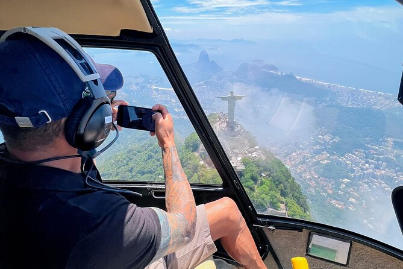
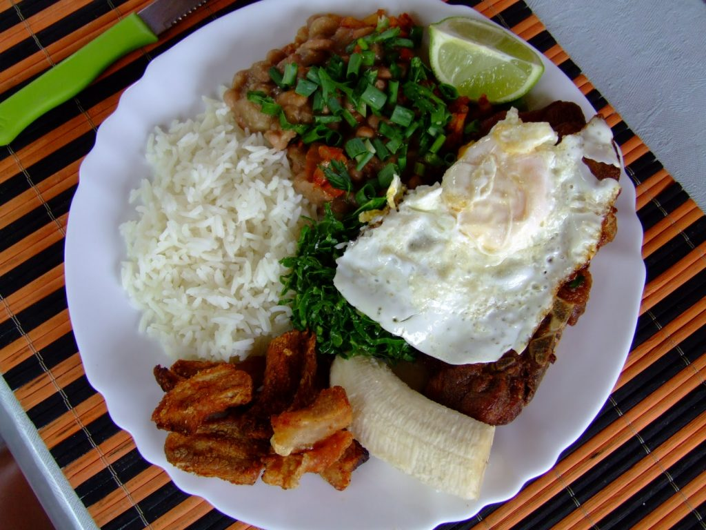
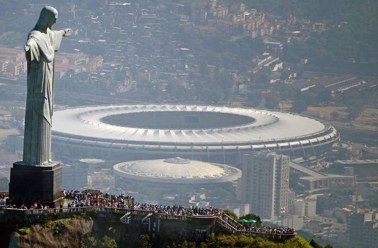

Qué ver y qué hacer en Brasil

üìç Intuyo que si llegaron hasta acá es porque están planificando un viaje, y quieren saber qu√© ver y qu√© hacer en S√£o Paulo.
üß≥ A lo mejor viajan por trabajo y tienen tiempo libre que quieren aprovechar... y no saben si valdrá o no la pena.
¬°Spoiler! üëâ S√≠, vale la pena
üöÅ Volar en helic√≥ptero
Rio de Janeiro es la ciudad con más helic√≥pteros del mundo üèôÔ∏è
¬°Y lo mejor! Están disponibles para el p√∫blico general
üí∏ ¬øEl truco? Viajar en grupo, alquilar un helic√≥ptero entre 4 o 6 personas hace que el precio sea más accesible
‚ú® Es una forma diferente de ver la ciudad y desde las alturas
üçΩÔ∏èComer, comer y comer
 S√£o Paulo es una ciudad cosmopolita üåé, construida por la inmigraci√≥n y en constante transformaci√≥n
Esto se refleja especialmente en su gastronom√≠a üçú
Desde comida japonesa en Liberdade hasta sabores del nordeste brasile√±o üå∂Ô∏è, hay platos para todos los gustos
üëâ ¬°Animate a probarlo todo!
⚽ Estadio de Maracaná
Ideal para conocer a fondo el estadio y descubrir la historia de uno de los clubes más grandes de Brasil
üéüÔ∏è Ofrecen visitas guiadas, museo y una experiencia para fanáticos del f√∫tbol que no te pod√©s perder
üí• Ideal para conocer a fondo el estadio, para los apasionados del f√∫tbol, un obligatorio